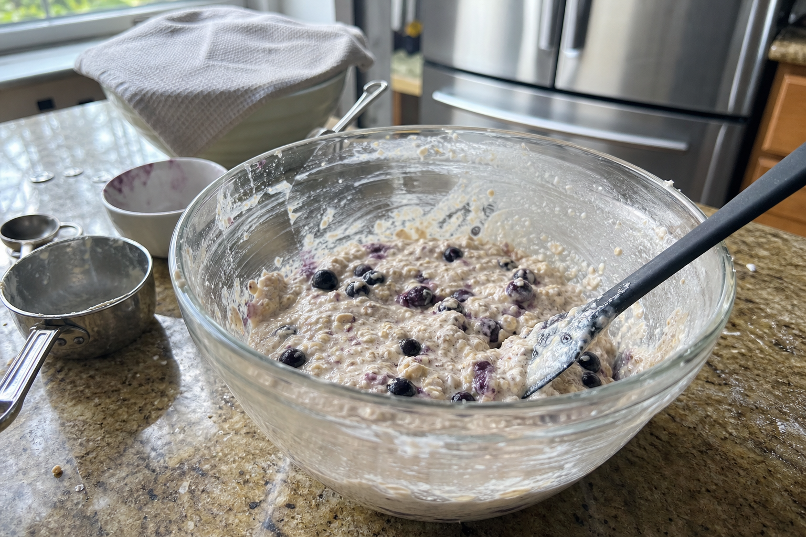
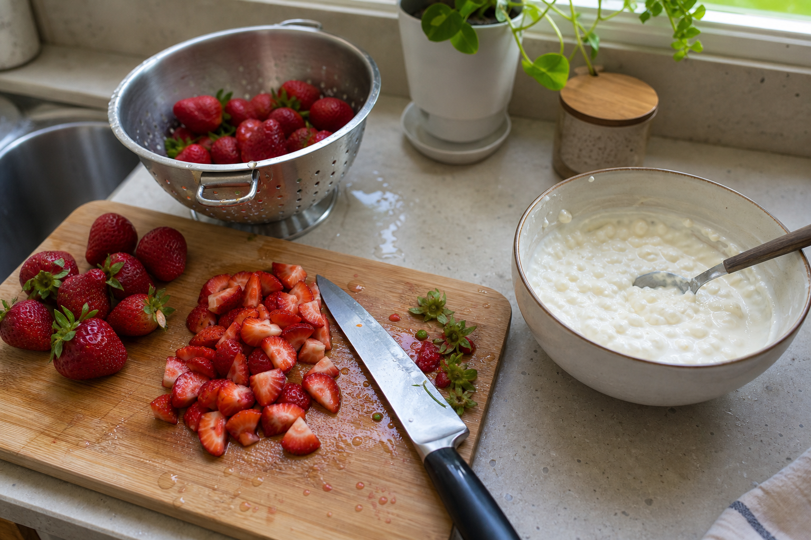
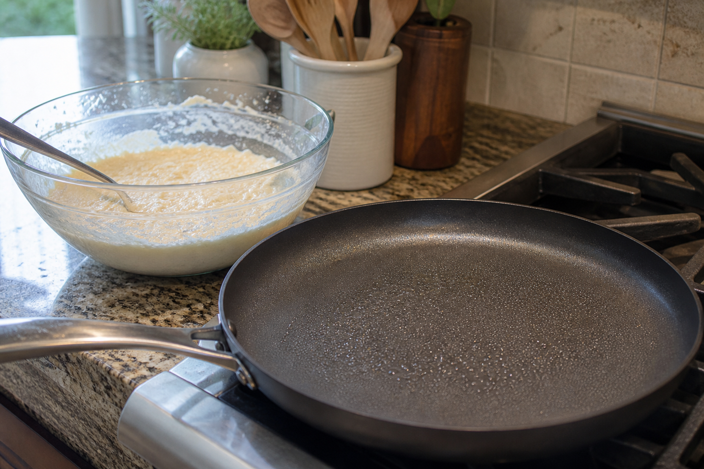
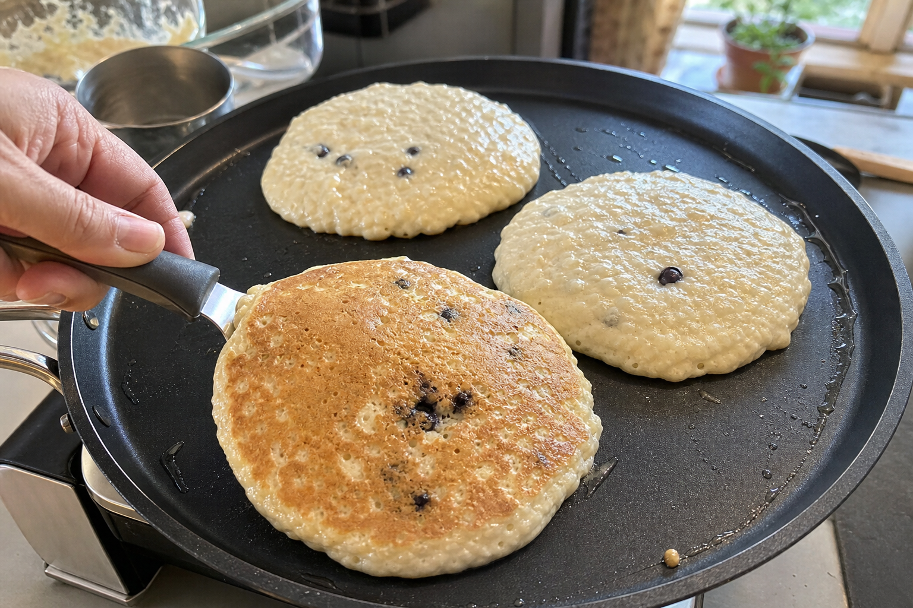
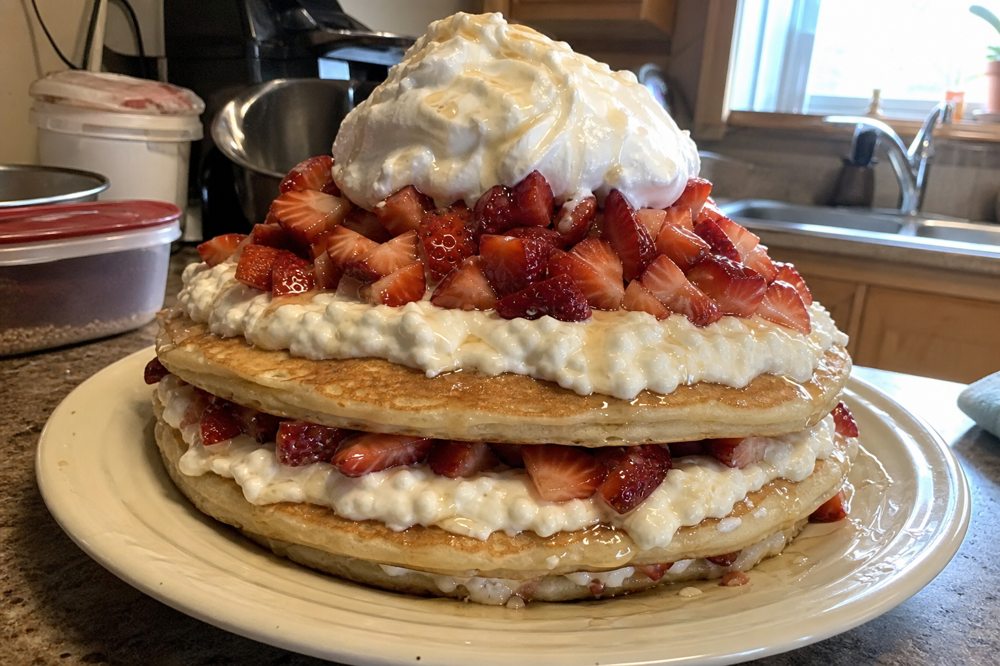

Before you cook
Allergens and dietary notes: Contains dairy, egg, and oats. May not be gluten-free unless certified gluten-free oats are used. Contains strawberries; optional blueberries if included.
Food safety: Cook pancakes until fully set in the center. Keep the cottage cheese/yogurt topping refrigerated until assembly. Refrigerate leftovers promptly, though this recipe is intended to be eaten fresh.
Nutrition is anchored to Jon's logged ingredient amounts. Costs are rough budget-store estimates, not receipt math.
Steps
Step 1: Mix the batter earlier in the day
Combine oats, cinnamon, pumpkin spice, stevia, vanilla extract, 70g frozen blueberries, 130g cottage cheese, and 155g egg whites. Blend or mix until mostly smooth. Refrigerate until night so the oats soften, the batter thickens, and the flavors settle.
Active: 7 min · Elapsed: 7–10 min

Step 2: Prep the strawberries and cheesecake topping
Wash, stem, and chop 500g strawberries into small pieces. Mix 260g low-fat cottage cheese with 260g nonfat vanilla light yogurt to make the cold cheesecake-style topping.
Active: 10 min · Elapsed: 10–15 min

Step 3: Heat the pan gently
Lightly coat a large nonstick pan or griddle with calorie-free avocado oil spray. Heat on low-medium, around 5 out of 20, until fully preheated. The low heat keeps the thick cottage-cheese-and-egg-white batter from burning or turning rubbery.
Active: 2 min · Elapsed: 12–15 min

Step 4: Cook three large pancakes
Pour the batter into 3 large pancakes. Cook about 5 minutes on the first side, flip carefully, and cook about 5 minutes on the second side, until lightly golden and fully set in the center.
Active: 12 min · Elapsed: 10–14 min

Step 5: Build the cheesecake pancake mountain
Move the pancakes to a plate. Spread the cottage-cheese/yogurt topping over the stack, add 100g fat-free Reddi Whip, drizzle with Walden Farms calorie-free syrup, and pile the chopped strawberries over the top.
Active: 6 min · Elapsed: 6–8 min
